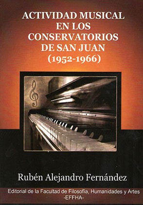

Libro

Publicación de Rubén Fernández como resultado de su tesina de grado para obtener el título de Licenciado en Educación Musical del Departamento de Música (FFHA, UNSJ), dirigido por Fátima Graciela Musri en el marco del Proyecto La guitarra en la historia de la música de San Juan (1952-1966). Se editó por la Editorial de la Facultad de Filosofía, Humanidades y Artes (EFFHA) en 2010.
Exploró la metodología de la enseñanza-aprendizaje y las actividades artísticas realizadas en los conservatorios de San Juan a mediados del siglo XX. Esta investigación contribuye a la historia local de la música trayendo al presente aportes que, si bien estaban en la oscuridad de la memoria cultural, fueron significativos en la formación de músicos y docentes provinciales.
rub_alefer@hotmail.com
Editorial FFHA
ISBN: 978-950-605-644-5
San Juan
2010